Αναλυτικό εγχειρίδιο χρήσης, με εικόνες από την εφαρμογή
VolunteerOps, Action Room · Έκδοση εφαρμογής 3.378.0 · 8 Οκτωβρίου 2026 · Οι εικόνες είναι από δοκιμαστικά δεδομένα, όχι από πραγματικούς τραυματίες.
Πριν διαβάσετε
Η διαλογή της εφαρμογής είναι εργαλείο υποστήριξης. Δεν αντικαθιστά το πρωτόκολλο του ΕΚΑΒ ούτε την κρίση του διασώστη, και δεν έχει επικυρωθεί κλινικά. Ένας εκπαιδευμένος διασώστης μπορεί πάντα να διαλέξει χρώμα απευθείας. Δύο λειτουργίες (η πρόταση χρώματος από βαθμολογία και η σημαία «Αναμενόμενος») είναι κλειστές από προεπιλογή μέχρι να τις εγκρίνει γιατρός (Μέρος Γ).
Σε συμβάν με πολλά θύματα (καραμπόλα, κατάρρευση, πτώση σε φαράγγι) η συνηθισμένη φόρμα περιστατικού δεν αρκεί. Το Μαζικό Συμβάν είναι ένας διακόπτης που ανάβει η διοίκηση. Από εκείνη τη στιγμή κάθε εγκεκριμένος εθελοντής της αποστολής μπορεί να ταξινομεί θύματα από το κινητό του, απαντώντας μία ερώτηση ΝΑΙ/ΟΧΙ ανά οθόνη. Η εφαρμογή βγάζει το χρώμα, κρατά το ιστορικό και δείχνει στη διοίκηση, σε πραγματικό χρόνο, πόσοι είναι, ποιος περιμένει και ποιος πρέπει να φύγει πρώτος.
Τα πρωτόκολλα είναι τα γνωστά START (ενήλικες) και JumpSTART (παιδιά). Η εφαρμογή έχει προσθέσει ερώτηση για έντονη αιμορραγία, καταγραφή μετρήσεων στο Σημείο Συγκέντρωσης Τραυματιών (ΣΣΤ), σειρά εκκένωσης και υπενθυμίσεις επανεκτίμησης.
Τα χρώματα
Χρώμα
Τι σημαίνει
Κόκκινο
Άμεση προτεραιότητα. Χρειάζεται άμεση φροντίδα και εκκένωση πρώτος.
Κίτρινο
Επείγουσα. Σοβαρός αλλά σταθερός για την ώρα. Μετά τα κόκκινα.
Πράσινο
Ελαφρά. Συνήθως περπατά. Τελευταίος στην εκκένωση.
Μαύρο
Νεκρός / μη διασώσιμος. Χρειάζεται πάντα δεύτερη, συνειδητή επιβεβαίωση.
Γκρι
Αναμενόμενος. Μόνο από τη διοίκηση, και μόνο αν έχει ανοίξει ο διακόπτης (ενότητα 18). Δεν είναι πέμπτο χρώμα του πρωτοκόλλου.
Ποιος κάνει τι
Ρόλος
Τι μπορεί
Διασώστης πεδίου (εγκεκριμένος συμμετέχων)
Ταξινομεί θύματα, μετρά περιπατητικούς, επανεκτιμά, καταγράφει μετρήσεις στο ΣΣΤ, βλέπει λίστα και χάρτη.
Διοίκηση (υπεύθυνος αποστολής, διαχειριστές)
Όλα τα παραπάνω, και επιπλέον: ενεργοποιεί και λήγει το συμβάν, ορίζει ΣΣΤ και χώρο πρασίνων, συμπληρώνει την εκτίμηση κατάστασης, δηλώνει διακομιδές, βλέπει τη σειρά εκκένωσης, τυπώνει την παράδοση προς το ΕΚΑΒ.
2. Πριν ξεκινήσετε
Η κάρτα διαλογής είναι η ταυτότητα του θύματος. Η ομάδα έχει προαριθμημένες φυσικές κάρτες. Ο αριθμός της κάρτας γράφεται ή σαρώνεται με την κάμερα. Η ίδια κάρτα είναι πάντα το ίδιο άτομο, άρα μια δεύτερη εκτίμηση με την ίδια κάρτα είναι επανεκτίμηση και όχι νέο θύμα.
Αν δεν υπάρχει κάρτα, πατήστε «Δεν έχω κάρτα»: η εφαρμογή δίνει δικό της κωδικό (π.χ. T7-03) και σας ζητά να τον γράψετε με μαρκαδόρο πάνω στο θύμα.
Θέση: η εφαρμογή παίρνει αυτόματα τη θέση σας όταν ταξινομείτε. Αν δεν υπάρχει GPS, γράφει «Χωρίς θέση» και η καταγραφή δεν μπλοκάρεται.
Λειτουργεί και χωρίς σήμα. Ό,τι καταγράφετε στέλνεται μόλις επιστρέψει η σύνδεση (ενότητα 12).
Α. Για τους διασώστες στο πεδίο
3. Πού βρίσκεται η διαλογή
Όταν η διοίκηση ανάψει το Μαζικό Συμβάν, όλοι οι συμμετέχοντες παίρνουν ειδοποίηση. Η κάρτα «Διαλογή Θυμάτων» εμφανίζεται στην καρτέλα «Εγώ» και είναι κλειστή: πατήστε τον τίτλο της για να ανοίξει (θυμάται την επιλογή σας). Στον τίτλο φαίνονται ήδη μικροί μετρητές ανά χρώμα. Μέσα στην κάρτα, πάνω δεξιά, υπάρχει ο σύνδεσμος «Εγχειρίδιο διαλογής» που ανοίγει αυτό το κείμενο.
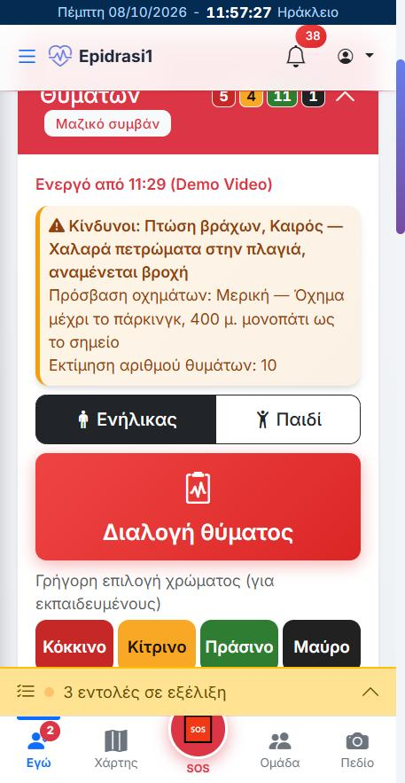
Εικόνα 1. Η κάρτα «Διαλογή Θυμάτων». Πάνω φαίνονται οι κίνδυνοι και η πρόσβαση που έγραψε η διοίκηση, και μετά η επιλογή «Ενήλικας / Παιδί».
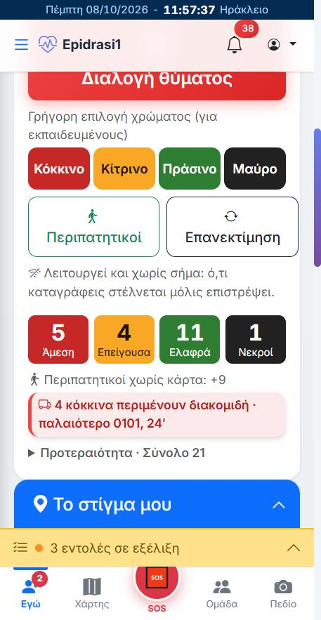
Εικόνα 2. Τα κουμπιά (γρήγορη επιλογή χρώματος, «Περιπατητικοί», «Επανεκτίμηση») και οι μετρητές. Η κόκκινη γραμμή λέει πόσα κόκκινα περιμένουν διακομιδή.
Διαβάστε τους κινδύνους πρώταΤο κίτρινο πλαίσιο στην κορυφή της κάρτας λέει τι κινδυνεύει όποιος πλησιάζει (π.χ. πτώση βράχων). Οι ίδιοι κίνδυνοι εμφανίζονται και στο πάνω μέρος κάθε οθόνης της διαλογής, ώστε να τους βλέπετε τη στιγμή που στέκεστε δίπλα στο θύμα.
4. Διαλογή ενός ενήλικα, βήμα προς βήμα
Αφήστε επιλεγμένο «Ενήλικας» (εικόνα 1) και πατήστε το μεγάλο κόκκινο κουμπί «Διαλογή θύματος».
Απαντήστε μία ερώτηση ανά οθόνη με ΝΑΙ ή ΟΧΙ. Τα δύο κουμπιά έχουν το ίδιο ουδέτερο χρώμα επίτηδες, ώστε να μη σας σπρώχνει η εφαρμογή προς κάποια απάντηση. Ένα πάτημα που γίνεται αμέσως μετά την αλλαγή οθόνης αγνοείται, για να μην απαντηθεί κατά λάθος η επόμενη ερώτηση.
Με το «Πίσω» διορθώνετε την προηγούμενη απάντηση. Με το «Ακύρωση» βγαίνετε χωρίς να καταγραφεί τίποτα.
Μόλις υπάρξει αποτέλεσμα, η οθόνη γεμίζει με το χρώμα. Η καταγραφή στέλνεται αμέσως.
Γράψτε ή σαρώστε τον αριθμό της κάρτας και πατήστε «Αποθήκευση κάρτας». Μπορείτε να το κάνετε και μετά: το θύμα έχει ήδη καταγραφεί.
Πατήστε «Επόμενο θύμα» ή «Κλείσιμο».
Παράδειγμα: ένας ενήλικας που δεν περπατά, αναπνέει κανονικά, δεν αιμορραγεί, έχει καλή αιμάτωση και εκτελεί εντολές βγαίνει Κίτρινο.
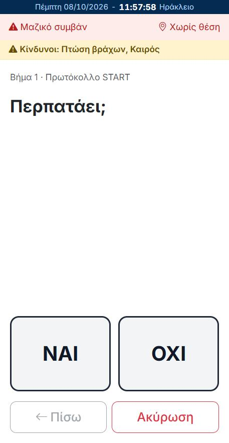
Βήμα 1. «Περπατάει;» Αν ΝΑΙ, ρωτά και για αιμορραγία πριν βγάλει πράσινο.
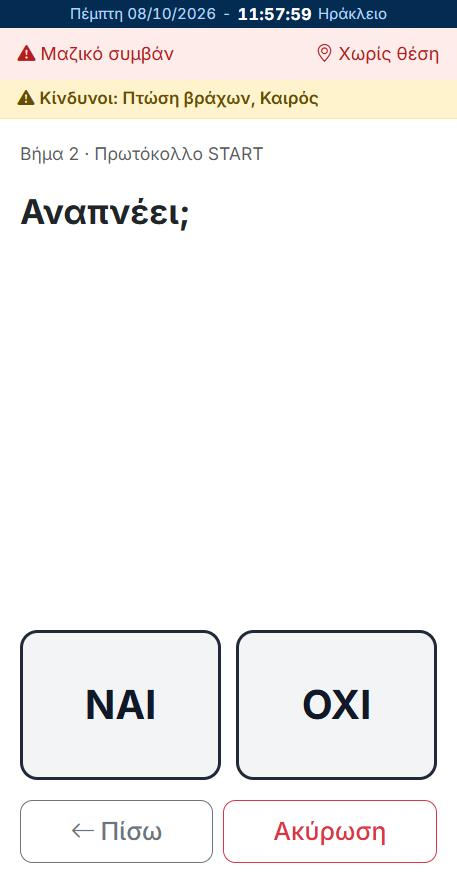
Βήμα 2. «Αναπνέει;» Αν ΟΧΙ, πηγαίνει στη διάνοιξη αεραγωγού (ενότητα 6).
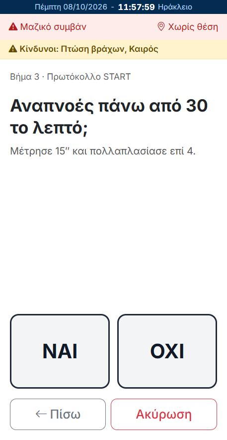
Βήμα 3. «Αναπνοές πάνω από 30 το λεπτό;» Μετρήστε 15″ και πολλαπλασιάστε επί 4.
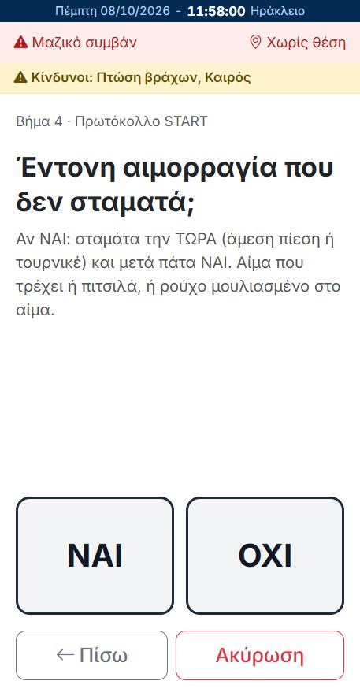
Βήμα 4. «Έντονη αιμορραγία που δεν σταματά;» Αν ΝΑΙ, σταματήστε την πρώτα (άμεση πίεση ή τουρνικέ) και μετά πατήστε ΝΑΙ. Το αποτέλεσμα είναι κόκκινο.
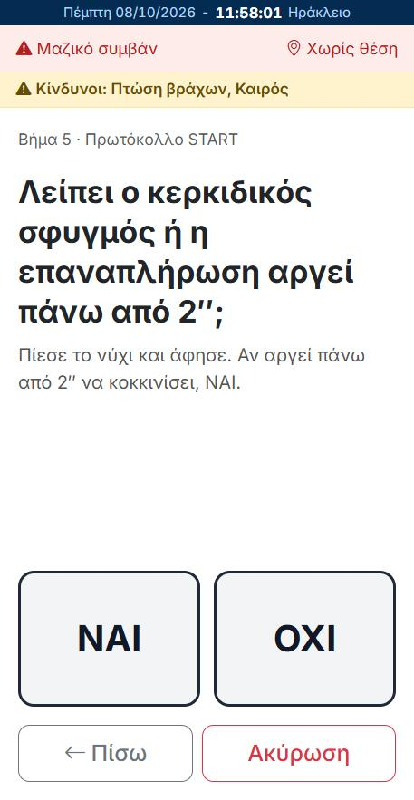
Βήμα 5. «Λείπει ο κερκιδικός σφυγμός ή η επαναπλήρωση αργεί πάνω από 2″;» Πιέστε το νύχι και αφήστε.
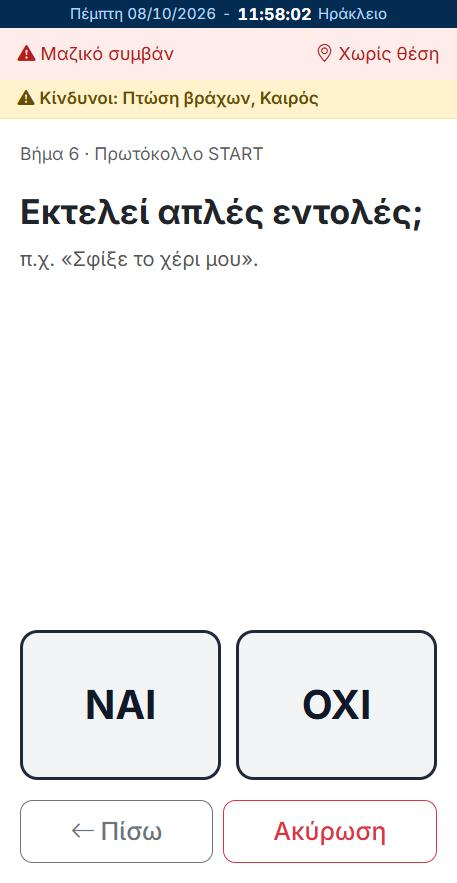
Βήμα 6. «Εκτελεί απλές εντολές;» π.χ. «Σφίξε το χέρι μου». ΝΑΙ δίνει κίτρινο, ΟΧΙ κόκκινο.
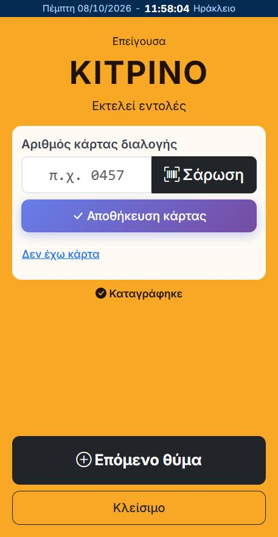
Αποτέλεσμα. Η οθόνη παίρνει το χρώμα και λέει γιατί (εδώ: «Εκτελεί εντολές»). Από κάτω ζητά τον αριθμό κάρτας.
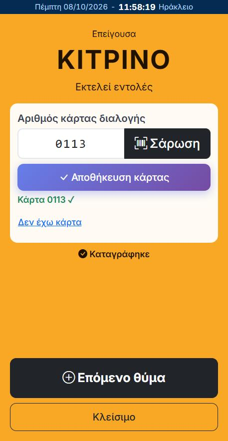
Κάρτα. Μετά το «Αποθήκευση κάρτας» εμφανίζεται «Κάρτα 0113 ✓». Η καταγραφή του χρώματος ήταν ήδη σταλμένη.
Ο εύκολος κανόναςΑν κάποιος δεν αναπνέει ούτε μετά τη διάνοιξη αεραγωγού, είναι μαύρο. Όποιος αιμορραγεί έντονα, αναπνέει πάνω από 30, έχει κακή αιμάτωση ή δεν εκτελεί εντολές είναι κόκκινος. Όποιος έχει περάσει όλα αυτά και εκτελεί εντολές είναι κίτρινος. Όποιος περπατά και δεν αιμορραγεί είναι πράσινος. Ο πλήρης πίνακας είναι στην ενότητα 21.
5. Παιδιά (JumpSTART)
Πριν πατήσετε «Διαλογή θύματος», επιλέξτε «Παιδί». Η εφαρμογή θα χρησιμοποιήσει την παιδική παραλλαγή JumpSTART (η οθόνη γράφει «Παιδική παραλλαγή JumpSTART»). Οι διαφορές είναι δύο και καθοριστικές:
Τα όρια αναπνοών είναι κάτω από 15 ή πάνω από 45 το λεπτό.
Παιδί που δεν αναπνέει αλλά έχει σφυγμό παίρνει πρώτα 5 εμφυσήσεις πριν κριθεί.
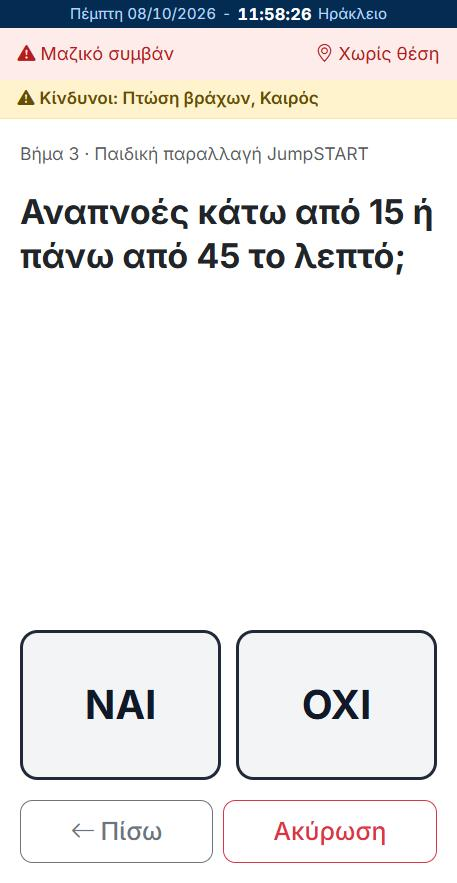
Εικόνα. Παιδική ροή: «Αναπνοές κάτω από 15 ή πάνω από 45 το λεπτό;»
Ποιος είναι «παιδί»;Την επιλογή την κάνετε εσείς. Η εφαρμογή δεν ελέγχει ηλικία. Το JumpSTART ισχύει περίπου για 1 έως 8 ετών. Για βρέφος που δεν περπατά ακόμα η ερώτηση «Περπατάει;» απαντιέται ΟΧΙ.
6. Το μαύρο χρώμα
Αν κάποιος δεν αναπνέει, η εφαρμογή ζητά πρώτα να ανοίξετε τον αεραγωγό (κλίση κεφαλής και ανύψωση πηγουνιού). Αν δεν αναπνέει ούτε τότε, βγαίνει μαύρο. Το μαύρο ζητά πάντα δεύτερο πάτημα, γιατί σε νεκρό δεν επιστρέφει κανείς.
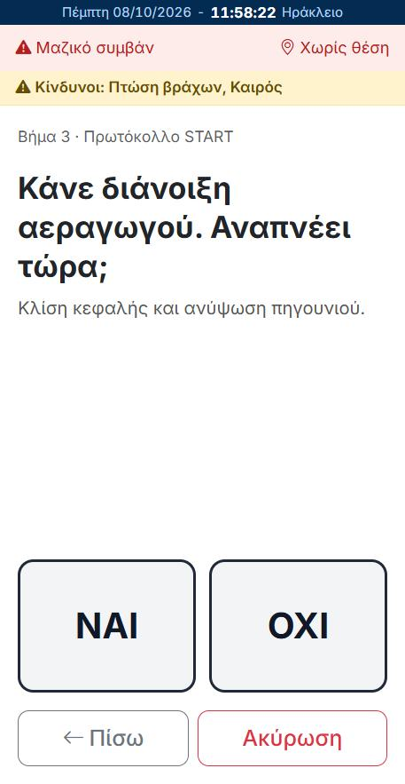
Εικόνα. «Κάνε διάνοιξη αεραγωγού. Αναπνέει τώρα;»
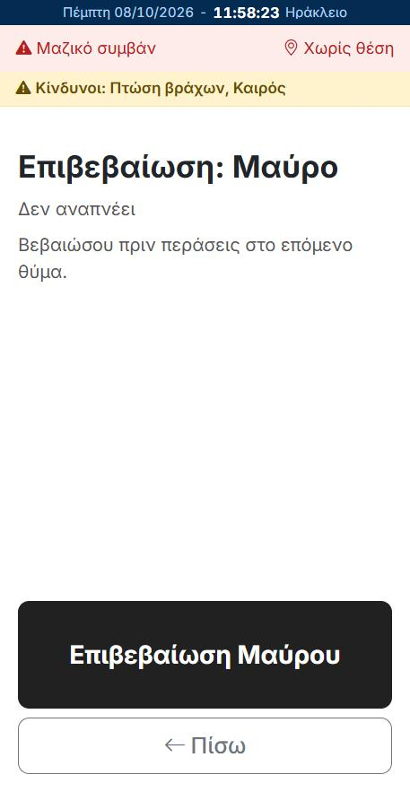
Εικόνα. «Επιβεβαίωση: Μαύρο». Βεβαιωθείτε και πατήστε «Επιβεβαίωση Μαύρου». Με το «Πίσω» γυρίζετε στην ερώτηση.
7. Γρήγορη επιλογή χρώματος
Στην κάρτα υπάρχουν τέσσερα έγχρωμα κουμπιά, «Γρήγορη επιλογή χρώματος (για εκπαιδευμένους)» (εικόνα 2). Ένας εκπαιδευμένος διασώστης που ξέρει ήδη το χρώμα μπορεί να το διαλέξει απευθείας, χωρίς ερωτήσεις. Η καταγραφή σημειώνεται ως «απευθείας επιλογή». Το μαύρο ζητά και εδώ επιβεβαίωση.
8. Περιπατητικοί
Στην αρχή ενός συμβάντος συνηθίζεται να ζητάτε από όσους μπορούν να περπατήσουν να πάνε σε ένα σημείο, τον χώρο πρασίνων. Δεν χρειάζεται να τους ταξινομήσετε έναν-έναν: πατήστε «Περιπατητικοί», ορίστε πόσοι στάλθηκαν με τα + και − (ή τα 2, 5, 10, 20) και πατήστε το πράσινο κουμπί. Μετρούν ως πράσινοι χωρίς κάρτα.
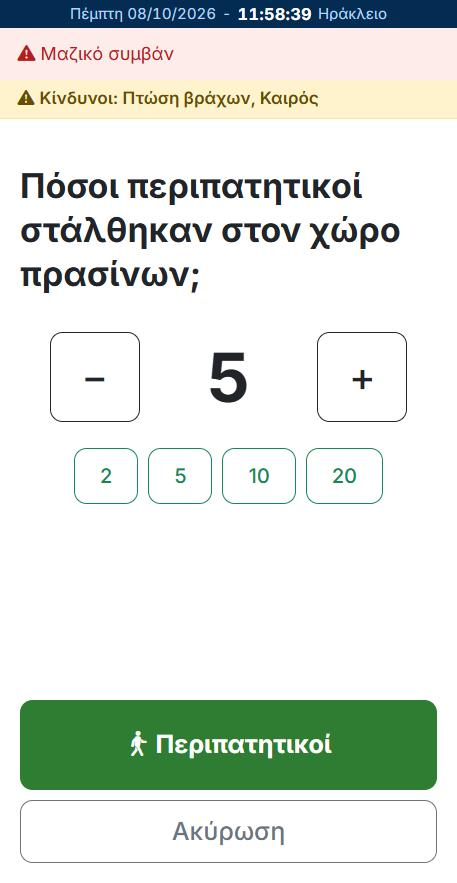
Εικόνα. «Πόσοι περιπατητικοί στάλθηκαν στον χώρο πρασίνων;»
Αν κάποιος περιπατητικός φαίνεται να αιμορραγεί ή να είναι σε κακή κατάσταση, ταξινομήστε τον κανονικά με κάρτα: η ερώτηση «Περπατάει;» τον ρωτά και για αιμορραγία.
9. Επανεκτίμηση
Η διαλογή είναι στιγμιότυπο: ένας κίτρινος μπορεί να γίνει κόκκινος σε δέκα λεπτά. Γι' αυτό η εφαρμογή θυμίζει επανεκτίμηση: μετά από 15′ για κόκκινο, 30′ για κίτρινο και 60′ για πράσινο εμφανίζεται ένα εικονίδιο ρολογιού ⏰ στη λίστα. Για το μαύρο δεν υπάρχει υπενθύμιση.
Πατήστε «Επανεκτίμηση» (εικόνα 2).
Σαρώστε ή γράψτε την κάρτα του θύματος. Η εφαρμογή το βρίσκει και δείχνει το τελευταίο χρώμα και την ώρα.
Πατήστε «Νέα εκτίμηση» και απαντήστε τις ερωτήσεις ξανά. Το ιστορικό κρατά και τις δύο εκτιμήσεις (π.χ. «Κόκκινο → Κίτρινο»).
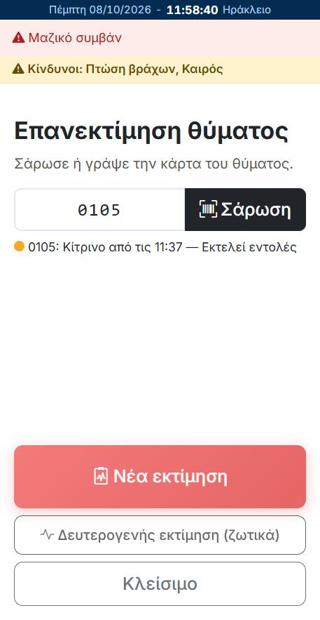
Εικόνα. Επανεκτίμηση: η κάρτα 0105 βρέθηκε (Κίτρινο από τις 11:37). Από εδώ πατάτε «Νέα εκτίμηση» ή «Δευτερογενής εκτίμηση».
10. Δευτερογενής εκτίμηση στο ΣΣΤ
Όταν το θύμα έχει φτάσει στο Σημείο Συγκέντρωσης Τραυματιών (ΣΣΤ) και έχετε χρόνο και εξοπλισμό, μπορείτε να καταγράψετε μετρήσεις: αναπνοές το λεπτό, συστολική πίεση και GCS. Το κουμπί «Δευτερογενής εκτίμηση» υπάρχει μέσα σε κάθε θύμα της λίστας (εικόνα 17) και στην οθόνη «Επανεκτίμηση».
Συμπληρώστε όσες μετρήσεις έχετε. Ό,τι δεν μετριέται αφήστε το κενό.
Πατήστε «Καταγραφή και επιλογή χρώματος».
Διαλέξτε το χρώμα με την κλινική σας κρίση.
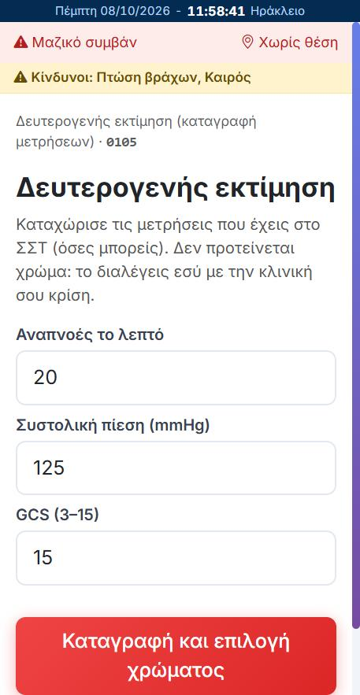
Εικόνα. Δευτερογενής εκτίμηση. Η οθόνη λέει «Δεν προτείνεται χρώμα: το διαλέγεις εσύ».
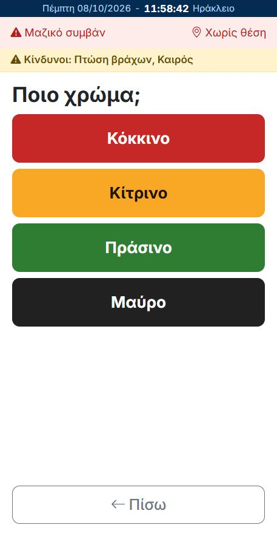
Εικόνα. Επιλογή χρώματος. Οι μετρήσεις έχουν ήδη καταγραφεί και φαίνονται στο ιστορικό του θύματος.
Αν ο οργανισμός έχει ανοίξει την πρόταση χρώματοςΜε τον διακόπτη της ενότητας 20 ανοιχτό, εμφανίζεται κουμπί «Υπολογισμός». Η εφαρμογή υπολογίζει τη βαθμολογία T-RTS και προτείνει χρώμα. Εσείς το αποδέχεστε ή διαλέγετε άλλο. Αν η πρόταση είναι χαμηλότερη από την τρέχουσα κατηγορία, εμφανίζεται προειδοποίηση, γιατί οι μετρήσεις δεν δείχνουν κατάγματα ή εσωτερικές κακώσεις. Για παιδί δεν υπάρχει ποτέ βαθμολογία.
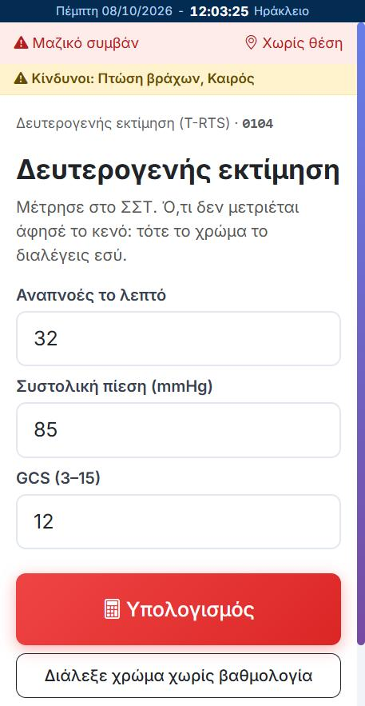
Με ανοιχτή πρόταση. Εμφανίζεται το κουμπί «Υπολογισμός».
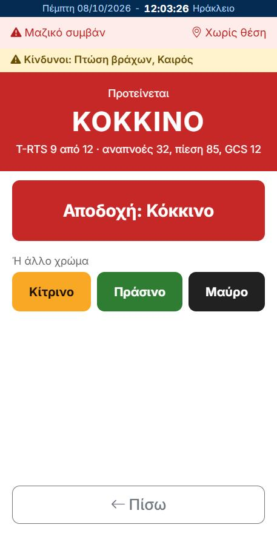
Με ανοιχτή πρόταση. «Προτείνεται: Κόκκινο, T-RTS 9 από 12». Εσείς αποδέχεστε ή αλλάζετε.
11. Η λίστα και ο χάρτης
Η λίστα θυμάτων
Κάτω από τους μετρητές της κάρτας υπάρχει η λίστα «Προτεραιότητα · Σύνολο N». Κάθε γραμμή δείχνει χρώμα, κάρτα, τον λόγο της κατηγορίας, αν είναι στο πεδίο ή στο ΣΣΤ και την ώρα. Πατήστε μια γραμμή για να ανοίξει: βλέπετε πόση ώρα πέρασε από την τελευταία εκτίμηση, το ιστορικό (π.χ. Κόκκινο 11:36 → Κίτρινο 11:46), κουμπιά πλοήγησης «Με όχημα» και «Με τα πόδια» προς το θύμα, και το κουμπί «Δευτερογενής εκτίμηση».
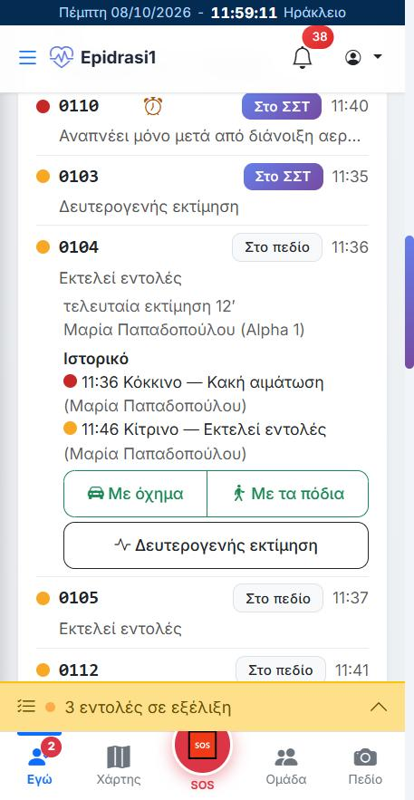
Εικόνα. Η λίστα. Η κάρτα 0104 έχει ανοιχτεί και δείχνει το ιστορικό της.
Γιατί 5 κόκκινα και «4 περιμένουν»;Οι μεγάλοι μετρητές δείχνουν όλα τα θύματα κάθε χρώματος, και όσα έχουν ήδη διακομιστεί. Η κόκκινη γραμμή «4 κόκκινα περιμένουν διακομιδή» δείχνει μόνο όσα είναι ακόμα εκεί. Το «+9 περιπατητικοί χωρίς κάρτα» προστίθεται στα πράσινα.
Ο χάρτης
Στην καρτέλα «Χάρτης», πάνω δεξιά, υπάρχει ένα πλαίσιο με τέσσερις αριθμούς: πόσοι είναι ακόμα εκεί ανά χρώμα. Από κάτω γράφει πόσα κόκκινα περιμένουν και πόσοι έχουν ήδη διακομιστεί. Τα θύματα δεν σημειώνονται ένα-ένα στον χάρτη, γιατί με 30 θύματα θα γέμιζε. Στον χάρτη φαίνονται μόνο το ΣΣΤ και ο χώρος πρασίνων. Πατώντας το πλαίσιο πηγαίνετε στην κάρτα.
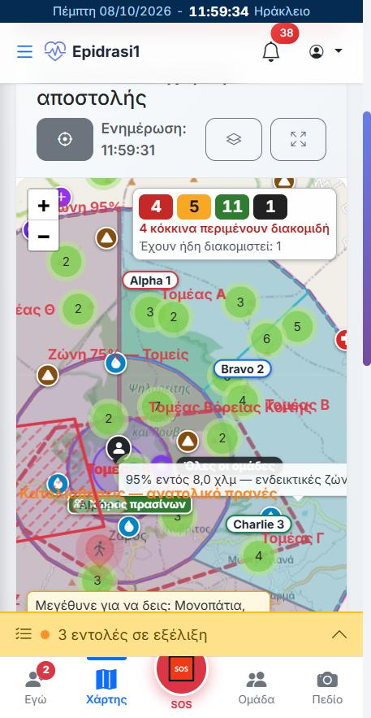
Εικόνα. Το πλαίσιο αριθμών πάνω δεξιά στον χάρτη (εδώ 4 κόκκινα, 5 κίτρινα, 11 πράσινα, 1 μαύρο) και ο «Χώρος πρασίνων».
12. Χωρίς σήμα και συνηθισμένα προβλήματα
Χωρίς σήμα. Συνεχίστε κανονικά. Η εφαρμογή κρατά τις καταγραφές στο κινητό και τις στέλνει μόλις υπάρξει σύνδεση. Αντί για «Καταγράφηκε» θα δείτε «Χωρίς σήμα: θα σταλεί μόλις επιστρέψει».
«Χωρίς θέση». Δεν υπάρχει GPS εκείνη τη στιγμή. Το θύμα καταγράφεται κανονικά, χωρίς συντεταγμένες.
Έγραψα λάθος κάρτα. Αν ο αριθμός ανήκει ήδη σε άλλο θύμα, η εφαρμογή ρωτά (επόμενο σημείο). Αλλιώς ενημερώστε τη διοίκηση.
«Είναι το ίδιο άτομο;» Αν γράψετε κάρτα που υπάρχει ήδη, η εφαρμογή ρωτά. «Ναι, το ίδιο άτομο» ενώνει τα δύο ιστορικά (είναι επανεκτίμηση). «Όχι, διορθώνω τον αριθμό» σημαίνει ότι έγραψες λάθος αριθμό και τον ξαναγράφεις.
Πάτησα κατά λάθος μαύρο. Το μαύρο δεν καταγράφεται αν δεν πατήσετε «Επιβεβαίωση Μαύρου». Αν καταγράφηκε, κάντε «Επανεκτίμηση» στην ίδια κάρτα: το ιστορικό κρατά και τις δύο εκτιμήσεις.
Δεν βλέπω το κουμπί «Διαλογή θύματος». Εμφανίζεται μόνο όσο το Μαζικό Συμβάν είναι ενεργό και μόνο σε εγκεκριμένους συμμετέχοντες της αποστολής.
Β. Για τη διοίκηση
13. Ενεργοποίηση και λήξη
Στην κορυφή του Action Room υπάρχει το κουμπί «Μαζικό Συμβάν». Πατήστε το. Όλοι οι συμμετέχοντες παίρνουν ειδοποίηση και η κάρτα «Διαλογή Θυμάτων» εμφανίζεται στο κινητό τους. Το κουμπί γίνεται κόκκινο: «Μαζικό Συμβάν: ΕΝΕΡΓΟ».
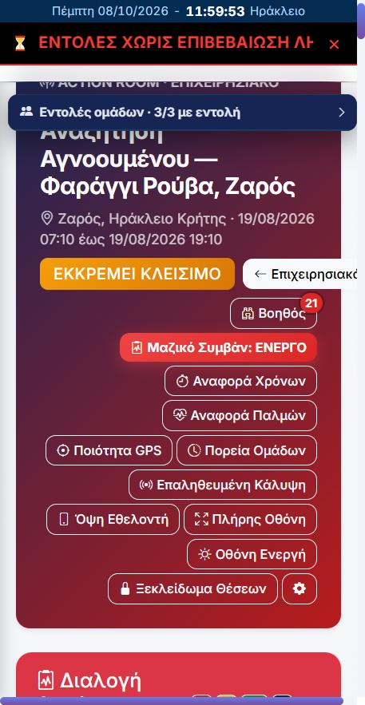
Εικόνα. Το κουμπί «Μαζικό Συμβάν: ΕΝΕΡΓΟ» στην κορυφή. Πατώντας το όσο είναι ενεργό σας πηγαίνει στην κάρτα.
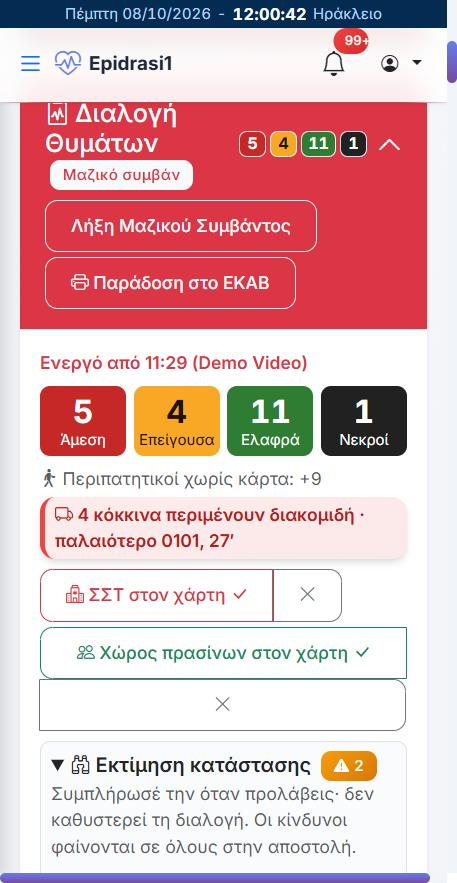
Εικόνα. Η κάρτα στη διοίκηση: «Λήξη Μαζικού Συμβάντος», «Παράδοση στο ΕΚΑΒ», μετρητές και κουμπιά ΣΣΤ και χώρου πρασίνων.
ΣΣΤ και χώρος πρασίνων
Στην κάρτα πατήστε «ΣΣΤ στον χάρτη» και μετά πατήστε στον χάρτη το σημείο όπου θα μαζεύονται οι τραυματίες. Το ίδιο κάνετε με τον «Χώρο πρασίνων στον χάρτη» για τους περιπατητικούς. Το ✓ σημαίνει ότι έχει οριστεί, και το ✕ τον αφαιρεί.
Λήξη
Το «Λήξη Μαζικού Συμβάντος» κλείνει τη διαλογή. Τα δεδομένα μένουν για την αναφορά.
14. Εκτίμηση κατάστασης (size-up)
Μόλις ανάψει το συμβάν, στην κάρτα ανοίγει από μόνη της η φόρμα «Εκτίμηση κατάστασης». Δεν καθυστερεί τίποτα: συμπληρώστε την όποτε προλάβετε και αλλάξτε την όσες φορές χρειαστεί. Το πρότυπο είναι η αναφορά M/ETHANE που χρησιμοποιούν οι υπηρεσίες έκτακτης ανάγκης του UK.
Κίνδυνοι: φωτιά, κατάρρευση ή ασταθές έδαφος, πτώση βράχων, επικίνδυνα υλικά, ηλεκτροφόρα καλώδια, νερό ή ρεύμα, καιρός, κυκλοφορία, και ελεύθερο κείμενο.
Πρόσβαση οχημάτων: ελεύθερη, μερική ή καμία, και ελεύθερο κείμενο (δρόμοι, μονοπάτια).
Πατήστε «Αποθήκευση». Οι κίνδυνοι φαίνονται σε όλους τους συμμετέχοντες, στην κορυφή της κάρτας και σε κάθε οθόνη της διαλογής. Όταν προσθέσετε νέο κίνδυνο, στέλνεται ειδοποίηση που τον κατονομάζει, μόνο γι' αυτόν. Στην αναφορά, η εκτίμηση αριθμού θυμάτων τοποθετείται δίπλα σε όσα τελικά καταγράφηκαν.
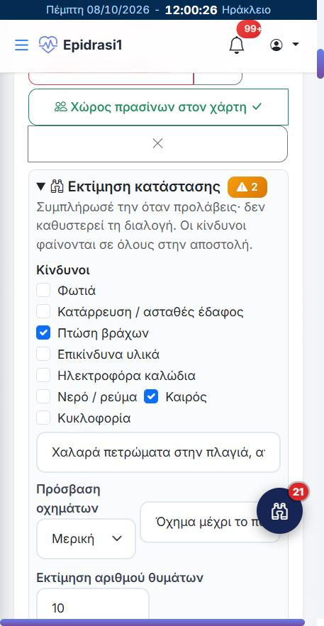
Εικόνα. Κίνδυνοι, πρόσβαση και εκτίμηση θυμάτων.
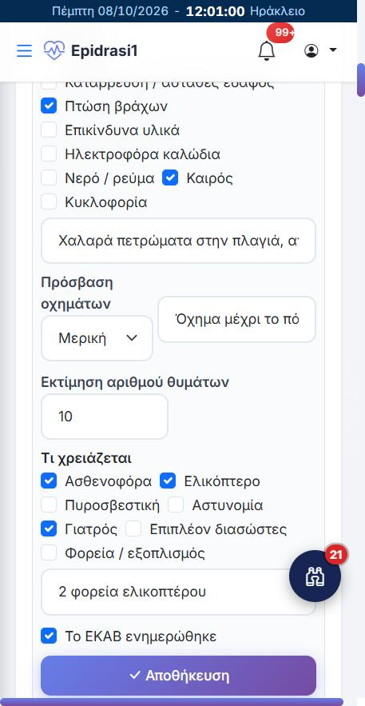
Εικόνα. Τι χρειάζεται, ενημέρωση ΕΚΑΒ και «Αποθήκευση».
15. Ο πίνακας της διοίκησης
Η κάρτα δείχνει με μια ματιά: τέσσερις μετρητές, τους περιπατητικούς χωρίς κάρτα, και την κόκκινη γραμμή «N κόκκινα περιμένουν διακομιδή · παλαιότερο 0101, 27′», δηλαδή ποιο κόκκινο περιμένει περισσότερο. Παρακάτω έρχονται η εκτίμηση κατάστασης, η σειρά εκκένωσης και η λίστα.
Ενέργειες σε ένα θύμα
Ανοίξτε μια γραμμή της λίστας. Η διοίκηση βλέπει, εκτός από το ιστορικό και την πλοήγηση:
«Στο ΣΣΤ»: σημειώνει ότι το θύμα μεταφέρθηκε στο σημείο συγκέντρωσης. Με το «Στο πεδίο» το γυρίζετε πίσω.
Όχημα, νοσοκομείο και «Διακομιδή»: σημειώνει ότι το θύμα έφυγε και με ποιο όχημα και προς ποιο νοσοκομείο. Παραμένει στη λίστα, γκρίζο, στο τέλος, γιατί συχνά ρωτάνε για ώρες «πού πήγε η γυναίκα από το δεύτερο αυτοκίνητο».
«Στοιχεία»: όνομα, ηλικία, φύλο, τηλέφωνο και σημειώσεις. Φαίνονται μόνο στη διοίκηση, οι εθελοντές τα βλέπουν κρυμμένα.
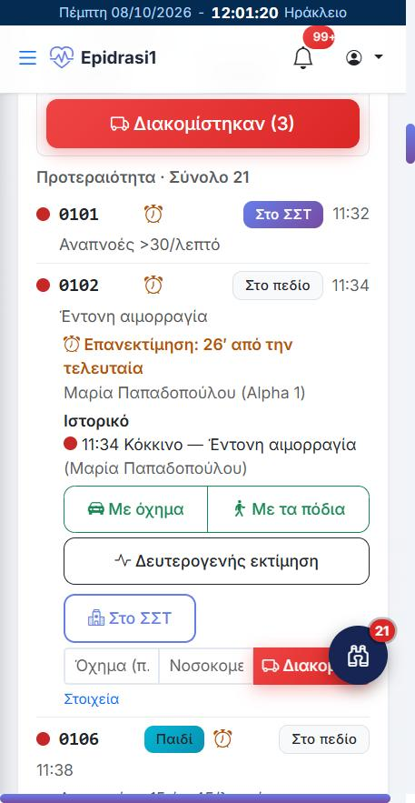
Εικόνα. Ανοιχτή γραμμή θύματος στη διοίκηση: ιστορικό, πλοήγηση, «Δευτερογενής εκτίμηση», «Στο ΣΣΤ», όχημα, νοσοκομείο και «Διακομιδή».
16. Σειρά εκκένωσης και φόρτωση οχήματος
Η ενότητα «Σειρά εκκένωσης» (μόνο για τη διοίκηση) απαντά στο «ποιος φεύγει πρώτος». Βάζει όσους περιμένουν με τη σειρά: κόκκινα, μετά κίτρινα, μετά πράσινα, και μέσα σε κάθε χρώμα όποιον περιμένει περισσότερο από την πρώτη εκτίμηση. Οι νεκροί και όσοι έχουν ήδη διακομιστεί δεν μπαίνουν. Η σειρά είναι καθαρά προτεραιότητας: το αν κάποιος είναι στο ΣΣΤ ή στο πεδίο δεν την αλλάζει, αλλά φαίνεται σε κάθε γραμμή, μαζί με τα λεπτά αναμονής και το ρολόι ⏰ αν έχει λήξει η επανεκτίμησή του.
Φόρτωση οχήματος ή ελικοπτέρου
Γράψτε στο πεδίο «Θέσεις οχήματος» πόσα άτομα χωράει το όχημα (π.χ. 2 φορεία ελικοπτέρου).
Πατήστε «Επιλογή των πρώτων». Επιλέγονται οι πρώτοι Ν της σειράς. Μπορείτε να αλλάξετε τα τικ με το χέρι.
Γράψτε όχημα και νοσοκομείο.
Πατήστε «Διακομίστηκαν (Ν)» και επιβεβαιώστε. Όλοι οι επιλεγμένοι σημειώνονται μαζί με το ίδιο όχημα και νοσοκομείο. Όσοι είχαν ήδη διακομιστεί παραλείπονται.
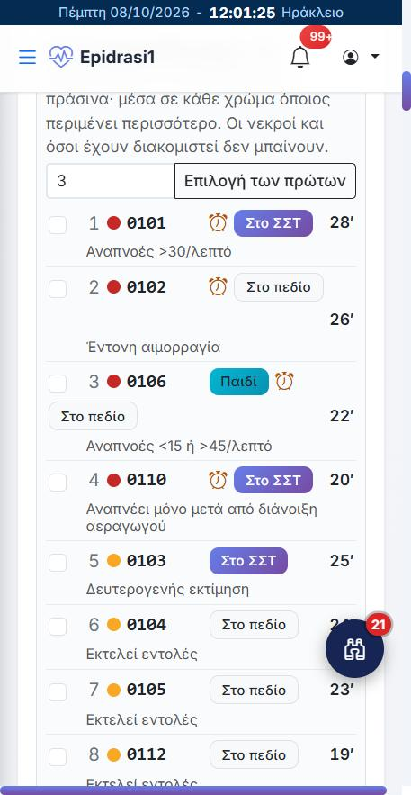
Εικόνα. Η σειρά εκκένωσης: «Θέσεις οχήματος», «Επιλογή των πρώτων» και η ταξινομημένη λίστα με τα λεπτά αναμονής.
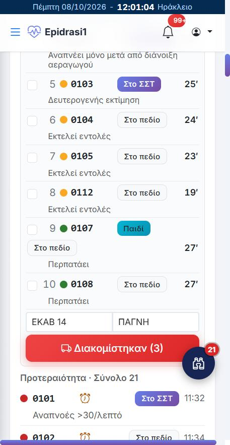
Εικόνα. Κάτω από τη λίστα: όχημα, νοσοκομείο και «Διακομίστηκαν (3)».
ΠροσοχήΗ σειρά είναι πρόταση προτεραιότητας, όχι εντολή. Η απόφαση για το ποιον θα φορτώσετε είναι δική σας. Δεν υπάρχει όριο χρόνου ή συναγερμός μέσα στη σειρά, αλλά ο «Βοηθός» επισημαίνει τα κόκκινα που περιμένουν και τις επανεκτιμήσεις που έχουν λήξει.
17. Παράδοση στο ΕΚΑΒ
Το κουμπί «Παράδοση στο ΕΚΑΒ» στην κεφαλίδα της κάρτας ανοίγει ένα εκτυπώσιμο έντυπο: ένας πίνακας για όσους δεν έχουν διακομιστεί και ένας για όσους έφυγαν. Στήλες: κάρτα, κατηγορία, εύρημα, ώρα διαλογής, κατάσταση και θέση (ή όχημα και νοσοκομείο), και στοιχεία. Πατήστε «Εκτύπωση».
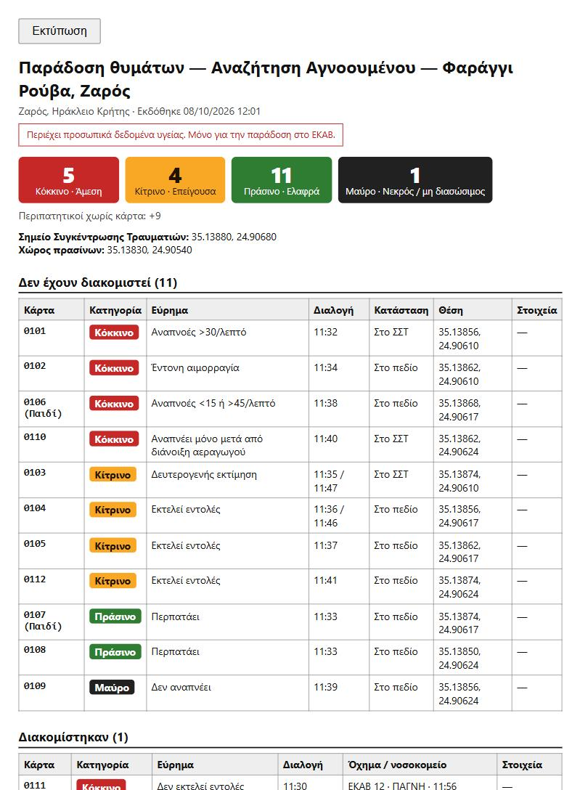
Εικόνα. Το έντυπο παράδοσης. Περιέχει προσωπικά δεδομένα υγείας και είναι μόνο για τη διοίκηση και την παράδοση στο ΕΚΑΒ.
Το έντυπο δεν περιλαμβάνει τις μετρήσεις της δευτερογενούς εκτίμησης ούτε παρεμβάσεις (π.χ. τουρνικέ). Αυτά ενημερώστε τα προφορικά στην παράδοση.
18. Αναμενόμενος (γκρι)
Κλειστή από προεπιλογήΑυτή η λειτουργία είναι ηθική και νομική απόφαση και δεν εμφανίζεται καθόλου στην εφαρμογή, εκτός αν ο οργανισμός την ανοίξει από τις Ρυθμίσεις (ενότητα 20). Να ανοίξει μόνο αφού το έχει εγκρίνει γιατρός ή το ΕΚΑΒ και έχει συμφωνηθεί ποιος αποφασίζει και με ποια κριτήρια.
Αναμενόμενος είναι ένα θύμα που, με βάση τη βαρύτητα των κακώσεων και τα μέσα που υπάρχουν, δεν αναμένεται να επιβιώσει. Η ταξινόμηση δεν αλλάζει: το θύμα παραμένει κόκκινο ή κίτρινο στο ιστορικό. Η διοίκηση βάζει επιπλέον μια σημαία.
Μόνο η διοίκηση μπορεί να τη βάλει. Ποτέ ο αλγόριθμος και ποτέ ο εθελοντής του πεδίου.
Μόνο για κόκκινο ή κίτρινο θύμα που δεν έχει διακομιστεί.
Απαιτεί γραπτή αιτιολογία και επιβεβαίωση. Η απόφαση καταγράφεται με το όνομά σας και την ώρα.
Αναιρείται με ένα πάτημα («Αναίρεση»), και πάντα, ακόμα και αν ο διακόπτης κλείσει αργότερα.
Τι αλλάζει όταν δηλώσετε κάποιον αναμενόμενο
Βγαίνει από τους μετρητές του κόκκινου ή κίτρινου και μετριέται χωριστά, με γκρι αριθμό («Αναμενόμενοι: 1»).
Πηγαίνει τελευταίος στη σειρά εκκένωσης, και το «Επιλογή των πρώτων» δεν τον επιλέγει ποτέ.
Ο «Βοηθός» δεν τον μετρά πια ως «κόκκινο που περιμένει διακομιδή», αλλά κρατά την υπενθύμιση επανεκτίμησης.
Όλοι στην αποστολή βλέπουν ότι δηλώθηκε. Την αιτιολογία τη βλέπει μόνο η διοίκηση (και εμφανίζεται στο έντυπο προς το ΕΚΑΒ). Η Δραστηριότητα γράφει ποιος και πότε, ποτέ το γιατί.
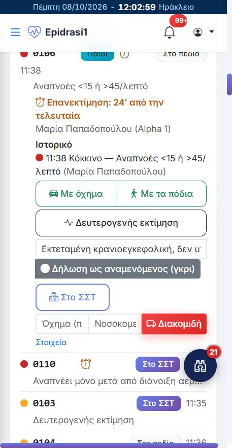
Εικόνα. Στη γραμμή του θύματος: πεδίο «Αιτιολογία (υποχρεωτική)» και κουμπί «Δήλωση ως αναμενόμενος (γκρι)».
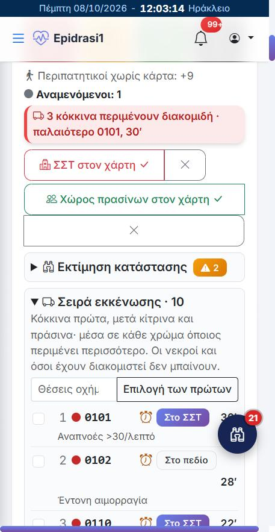
Εικόνα. Μετά τη δήλωση: «Αναμενόμενοι: 1» και τα κόκκινα που περιμένουν έπεσαν από 4 σε 3.
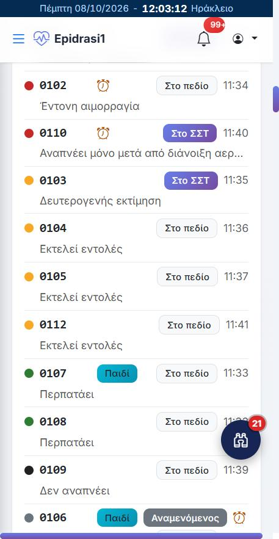
Εικόνα. Το θύμα εμφανίζεται με γκρι κουκκίδα και σήμα «Αναμενόμενος».
19. Μετά το συμβάν
Όταν η αποστολή κλείσει, η αναφορά και τα Στατιστικά της περιλαμβάνουν ενότητα για το Μαζικό Συμβάν:
Τους μετρητές ανά χρώμα, την αρχική διαλογή και τις επανεκτιμήσεις.
Την εκτίμηση κατάστασης, με την εκτίμηση θυμάτων δίπλα στον αριθμό που τελικά καταγράφηκε.
Το μπλοκ «Πώς πήγε η διαλογή»: πόσα θύματα επανεκτιμήθηκαν, σε πόσα η πρώτη εκτίμηση ήταν χαμηλότερη (πιθανό υπο-triage) ή υψηλότερη (πιθανό υπερ-triage), πόσες δευτερογενείς εκτιμήσεις έγιναν, και πόσα λεπτά πέρασαν από την πρώτη εκτίμηση ως τη διακομιδή.
Δεν είναι ποσοστά λάθουςΗ σύγκριση γίνεται με την πρώτη επανεκτίμηση και όχι με την πραγματική έκβαση των θυμάτων, που δεν τη γνωρίζουμε. Μια μείωση της κατηγορίας μπορεί να είναι πραγματική βελτίωση μετά από θεραπεία, και μόνο όσοι επανεκτιμήθηκαν μπορούν να εμφανιστούν. Το κείμενο αυτό γράφεται και μέσα στην αναφορά.
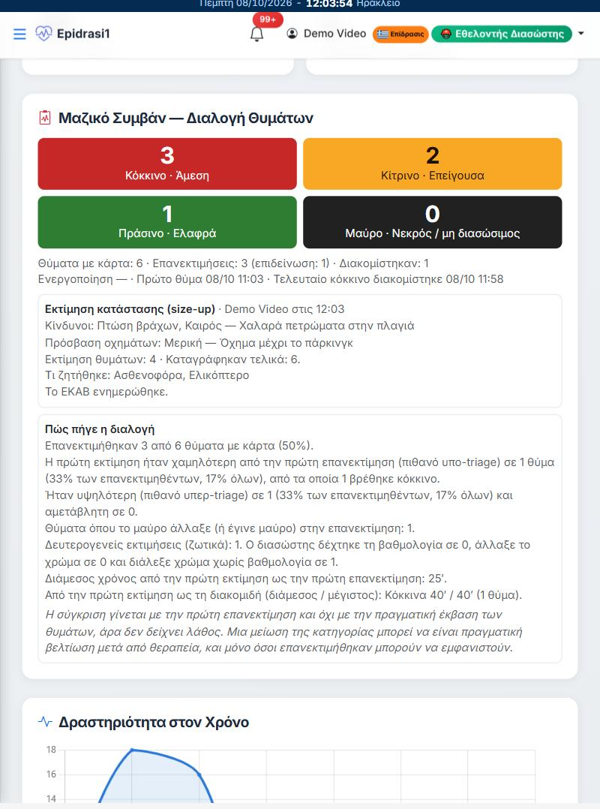
Εικόνα. Η ενότητα «Μαζικό Συμβάν — Διαλογή Θυμάτων» στα Στατιστικά της αποστολής, με την εκτίμηση κατάστασης και το «Πώς πήγε η διαλογή».
Όλες οι ενέργειες φαίνονται και στην Δραστηριότητα της αποστολής (ποιος ταξινόμησε ποιον, επανεκτιμήσεις, διακομιδές, αλλαγές στην εκτίμηση κατάστασης).
Γ. Ρυθμίσεις και παράρτημα
20. Οι δύο διακόπτες ασφαλείας
Στις Ρυθμίσεις → Action Room υπάρχουν δύο διακόπτες. Και οι δύο είναι κλειστοί από προεπιλογή. Ανοίγουν μόνο από όποιον διαχειρίζεται τον οργανισμό, και μόνο αφού τους έχει εγκρίνει γιατρός ή το ΕΚΑΒ.
Διακόπτης
Τι κάνει
Διαλογή: πρόταση χρώματος από βαθμολογία T-RTS
Κλειστός: η δευτερογενής εκτίμηση καταγράφει μετρήσεις και ο διασώστης διαλέγει το χρώμα. Ανοιχτός: η εφαρμογή υπολογίζει T-RTS και προτείνει χρώμα. Γιατί κλειστός: το NHS England αντικατέστησε το «Triage Sort» (επιστολή 18/4/2023, πλήρης αντικατάσταση έως 30/6/2024), επειδή τα στοιχεία έδειξαν ότι εντοπίζει φτωχά όσους χρειάζονται παρέμβαση που σώζει ζωή.
Διαλογή: κατηγορία «Αναμενόμενος» (γκρι)
Κλειστός: δεν εμφανίζεται κανένα κουμπί. Ανοιχτός: η διοίκηση μπορεί να δηλώνει αναμενόμενο (ενότητα 18). Ό,τι έχει ήδη δηλωθεί παραμένει ορατό και αναιρείται και με κλειστό διακόπτη.
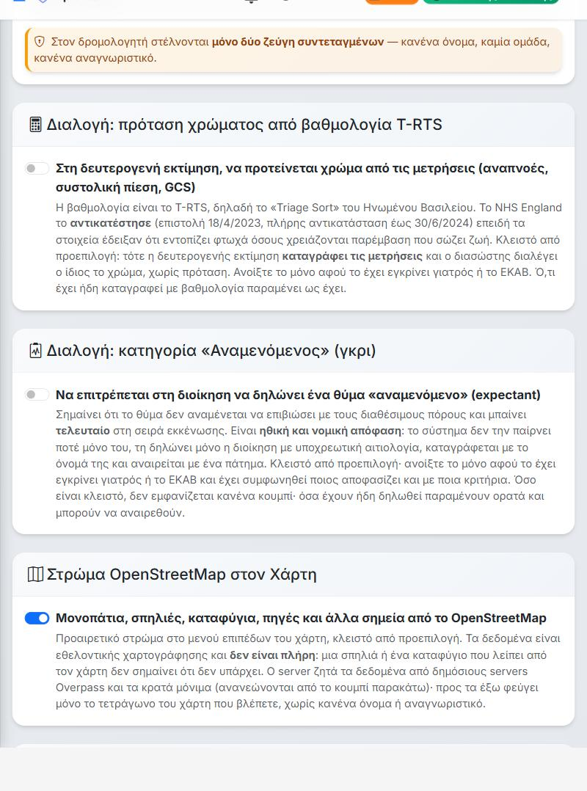
Εικόνα. Ρυθμίσεις, καρτέλα Action Room: οι δύο διακόπτες, κλειστοί.
21. Πίνακες ερωτήσεων START και JumpSTART
Όσα αναγράφονται είναι τα ακριβή κείμενα της οθόνης. «→» σημαίνει ότι ακολουθεί η επόμενη ερώτηση.
Ενήλικες (START)
Ερώτηση
ΝΑΙ
ΟΧΙ
Περπατάει;
→ αιμορραγία (πεζός)
→ Αναπνέει;
Έντονη αιμορραγία που δεν σταματά; (πεζός)
Κόκκινο
Πράσινο
Αναπνέει;
→ αναπνοές >30
→ διάνοιξη αεραγωγού
Κάνε διάνοιξη αεραγωγού. Αναπνέει τώρα;
Κόκκινο
Μαύρο
Αναπνοές πάνω από 30 το λεπτό;
Κόκκινο
→ αιμορραγία
Έντονη αιμορραγία που δεν σταματά;
Κόκκινο
→ αιμάτωση
Λείπει ο κερκιδικός σφυγμός ή η επαναπλήρωση αργεί πάνω από 2″;
Είναι σε εγρήγορση, αντιδρά στη φωνή ή εντοπίζει τον πόνο;
Κίτρινο
Κόκκινο
22. Συχνές ερωτήσεις
Ερώτηση
Απάντηση
Μπορεί να ταξινομήσει και η διοίκηση;
Η διοίκηση που δεν είναι εγκεκριμένη συμμετέχουσα δεν έχει τα κουμπιά πεδίου. Μπορεί όμως να κάνει δευτερογενή εκτίμηση σε οποιοδήποτε θύμα της λίστας, να δηλώνει διακομιδές και να βλέπει τα πάντα.
Γιατί δεν βλέπω τα θύματα στον χάρτη;
Επίτηδες: με 30 θύματα ο χάρτης γέμιζε. Βλέπετε τους αριθμούς ανά χρώμα στο πλαίσιο πάνω δεξιά και τη θέση κάθε θύματος μέσα στη λίστα (κουμπιά πλοήγησης).
Μπορώ να σβήσω ένα θύμα;
Όχι. Ένα θύμα που καταγράφηκε κατά λάθος διορθώνεται με νέα εκτίμηση (επανεκτίμηση). Έτσι το ιστορικό μένει πλήρες.
Πώς ξέρω ποιος ταξινόμησε ποιον;
Το ιστορικό κάθε θύματος γράφει ποιος έκανε κάθε εκτίμηση και πότε, και η Δραστηριότητα της αποστολής τα δείχνει όλα στη σειρά.
Ποιος έχει πρόσβαση στα ονόματα και τα τηλέφωνα;
Μόνο η διοίκηση. Για τους εθελοντές είναι κρυμμένα. Η Δραστηριότητα και η αναφορά δεν δείχνουν ποτέ όνομα ή τηλέφωνο.
Η εφαρμογή «έβγαλε» χρώμα που διαφωνώ.
Το χρώμα προκύπτει μόνο από τις απαντήσεις σας. Αν διαφωνείτε, κάντε «Επανεκτίμηση». Αν είστε εκπαιδευμένος, διαλέξτε απευθείας το χρώμα από τα έγχρωμα κουμπιά. Η κρίση του διασώστη υπερισχύει πάντα.